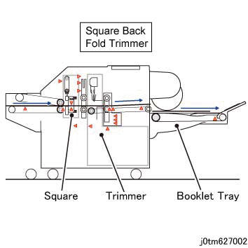

6.2.8.6 SBFT Basic 配置 
The SBFT receives a 小册子 从 the 小册子 单元 of 中央-装订 装订器 D6 和 然后 输出 the 小册子 通过 裁切器 章节 to 小册子纸盘.
以下 describes the post-processing 的 SBFT.
方背 Processing:
当...时 方背 模式 is 已选择, the 小册子's 歪斜 is corrected, the convex 数量 is changed 按照 the 号码 纸张的 of it, 和 然后 the 操作 停止 temporarily. 在...之后 该, the area 在...附近 spine is clamped vertically, 和 辊 is moved 当...时 applying pressure toward the clamped 侧面 to crush the rounded spine, 哪个 flattens the swell 的 小册子.
裁切 process:
当...时 裁切模式 is 已选择, 纸张 停止 temporarily at the cutting 位置 和 the 边缘 is cut 和/与 a cutter. The trimmed 纸张 strips 是 stored in 裁切器 Waste Container.

(图 1) tm627002